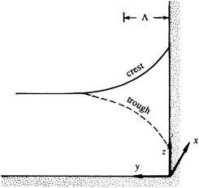

If the left wall is moved away to infinity, what remains is a gravity wave
trapped to the coast. Such coastally-trapped long gravity waves, in which
the transverse velocity \( v = 0 \) everywhere, are called Kelvin waves
The equations of motion for a Kelvin wave propagating along a coast aligned with the x-axis are:
\[
\frac{\partial \eta}{\partial t} + H \left( \frac{\partial u}{\partial x} + \cancel{\frac{\partial v}{\partial y}} \right) = 0, \quad
\frac{\partial u}{\partial t} - \cancel{fv} = -g \frac{\partial \eta}{\partial x}, \quad \text{and} \quad
\cancel{\frac{\partial v}{\partial t}} + fu = -g \frac{\partial \eta}{\partial y}
\]
\[
\frac{\partial \eta}{\partial t} + H \frac{\partial u}{\partial x} = 0, \quad \frac{\partial u}{\partial t} = -g \frac{\partial \eta}{\partial x}, \quad \text{and} \quad fu = -g \frac{\partial \eta}{\partial y}
\]

Coastal Kelvin wave propagating along the x-axis. The sea surface shape across a section through a crest is indicated by the continuous line, and that along a trough is indicated by the dashed line